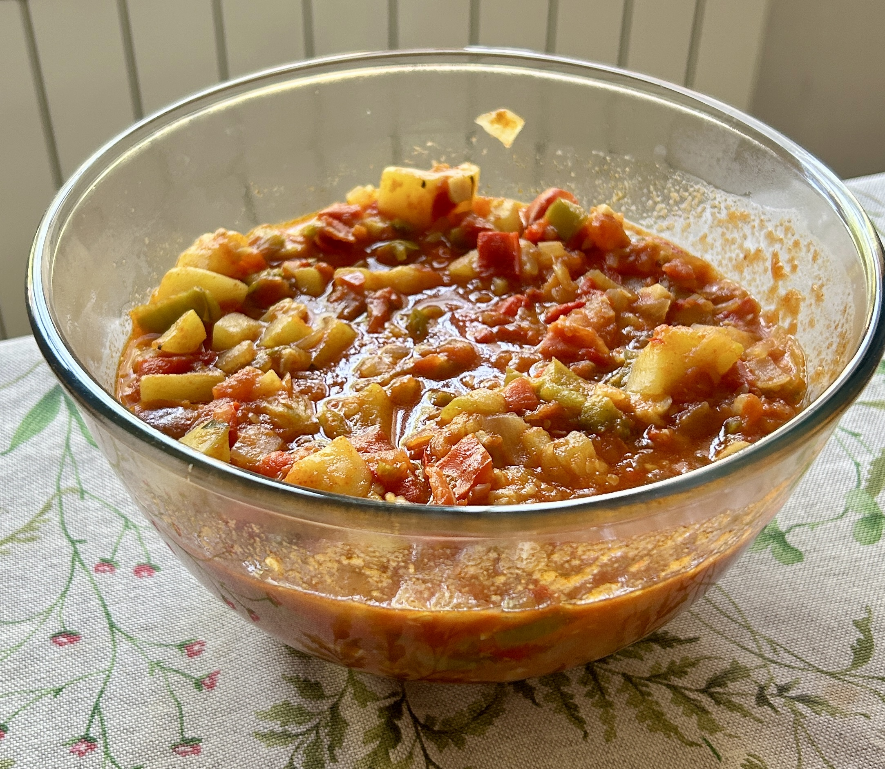

El pisto es un plato tradicional de la cocina española, especialmente popular en La Mancha. Se elabora con una mezcla de verduras frescas como tomate, pimiento, calabacín, cebolla y berenjena, todo sofrito lentamente en aceite de oliva hasta que queda tierno y bien integrado. Su sabor suave y casero lo convierte en una opción versátil y saludable.
Para preparar pisto, se comienzan sofriendo la cebolla y el pimiento, luego se añaden el calabacín y la berenjena, y finalmente el tomate pelado y troceado. Se cocina a fuego lento hasta que las verduras estén bien cocidas y el tomate forme una salsa espesa. Se puede servir solo, con huevo frito o como acompañamiento de carnes.